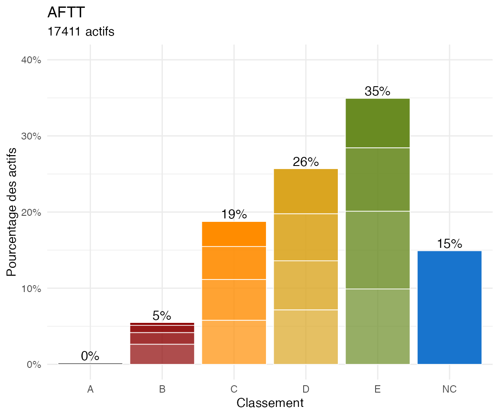

Global Classements Analysis (all AFTT)
Source:vignettes/Vignette3_GlobalAnalysis.Rmd
Vignette3_GlobalAnalysis.RmdTo be cont’d
Analysis of current percentage of each classement
# Active players
Actifs_AFTT <- players_m[players_m[, "position_bis"] != "Inactive", ]
# Actives by classement
tab_classement_Actifs_AFTT <- table(Actifs_AFTT[, "classement"])
pct_classement_AFTT <- tab_classement_Actifs_AFTT / nrow(Actifs_AFTT)
df_class_AFTT <- data.frame(
classement = names(tab_classement_Actifs_AFTT),
pct_classement_AFTT = round(as.numeric(pct_classement_AFTT),digits=4)
)
noAB0<-c("NC","E6","E4","E2","E0","D6","D4","D2","D0","C6","C4","C2","C0","B6","B4","B2")
df_class_AFTT[df_class_AFTT$classement %in% noAB0,]## classement pct_classement_AFTT
## 32 B2 0.0096
## 33 B4 0.0153
## 34 B6 0.0263
## 35 C0 0.0329
## 36 C2 0.0434
## 37 C4 0.0536
## 38 C6 0.0578
## 39 D0 0.0593
## 40 D2 0.0617
## 41 D4 0.0646
## 42 D6 0.0714
## 43 E0 0.0651
## 44 E2 0.0833
## 45 E4 0.1020
## 46 E6 0.0990
## 47 NC 0.1492
# Actives by classement letter
tab_lettre_Actifs_AFTT <- table(Actifs_AFTT[, "classement_lettre"])
pct_letter_AFTT <- tab_lettre_Actifs_AFTT / nrow(Actifs_AFTT)
pct_label_AFTT <- paste0(round(100 * pct_letter_AFTT), "%")
df_labels_AFTT <- data.frame(
classement_lettre = names(tab_lettre_Actifs_AFTT),
pct_letter_AFTT = as.numeric(pct_letter_AFTT),
pct_label_AFTT = pct_label_AFTT
)
df_labels_AFTT## classement_lettre pct_letter_AFTT pct_label_AFTT
## 1 A 0.001837919 0%
## 2 B 0.054907817 5%
## 3 C 0.187639998 19%
## 4 D 0.257021423 26%
## 5 E 0.349376831 35%
## 6 NC 0.149216013 15%
library(ggplot2)
AFTTplot <- ggplot(data = Actifs_AFTT) +
geom_bar(
aes(
x = classement_lettre,
fill = classement_lettre,
alpha = classement_chiffre,
y = after_stat(count / sum(count))
),
col = "white",
lwd = 0.3,
show.legend = FALSE
) +
scale_fill_manual(
values = c(
A = "grey30",
B = "darkred",
C = "darkorange",
D = "goldenrod",
E = "olivedrab4",
NC = "dodgerblue3"
),
drop = FALSE
) +
scale_alpha_manual(values = c(1, 0.9, 0.8, 0.7,1)) +
scale_y_continuous(labels = scales::percent) +
scale_x_discrete(drop = FALSE) +
coord_cartesian(ylim = c(0, 0.4)) +
theme_minimal() +
labs(
x = "Classement",
y = "Pourcentage des actifs",
title = "AFTT",
subtitle = paste(nrow(Actifs_AFTT), "actifs")
) +
geom_text(
data = df_labels_AFTT,
aes(x = classement_lettre, y = pct_letter_AFTT, label = pct_label_AFTT),
vjust = -0.3,
size = 4
)
AFTTplot
Estimate of new classement and analysis of change
players_m_new <- players.new.classement()## Best guess cumulated percentage based on means across columns of the provided grille. Excludes A's and B0 players as their number is fixed##
## Transition table:
## new
## old NC E6 E4 E2 E0 D6 D4 D2 D0 C6 C4 C2 C0 B6 B4 B2
## NC 516 1755 270 50 5 1 1 . . . . . . . . .
## E6 . 851 735 120 12 5 1 . . . . . . . . .
## E4 . 75 963 606 90 28 10 4 . . . . . . . .
## E2 . 1 137 863 335 85 18 8 2 . 1 . . . . .
## E0 . . 4 195 611 226 76 18 1 2 . . . . . .
## D6 . . . 6 240 605 285 83 20 3 2 . . . . .
## D4 . . . . 22 247 553 228 61 8 5 . . . . .
## D2 . . . . . 19 255 522 216 46 12 3 1 . . .
## D0 . . . . . . 13 230 559 188 39 4 . . . .
## C6 . . . . . . 2 12 232 531 190 37 2 . . .
## C4 . . . . . . . . 17 220 535 153 9 . . .
## C2 . . . . . . . . 2 5 164 466 108 9 1 .
## C0 . . . . . . . . . 1 2 128 355 83 3 .
## B6 . . . . . . . . . . . 4 105 299 50 .
## B4 . . . . . . . . . . . . . 59 181 27
## B2 . . . . . . . . . . . . . . 35 132
## Sum 516 2682 2109 1840 1315 1216 1214 1105 1110 1004 950 795 580 450 270 159
## new
## old Sum
## NC 2598
## E6 1724
## E4 1776
## E2 1450
## E0 1133
## D6 1244
## D4 1124
## D2 1074
## D0 1033
## C6 1006
## C4 934
## C2 755
## C0 572
## B6 458
## B4 267
## B2 167
## Sum 17315##
## Difference table (number of players upward/downward by):
##
## -3 -2 -1 0 1 2 3 4 5 6 7 Sum
## 5 105 2322 8542 5185 928 173 40 13 1 1 17315
attr(players_m_new, which="diff_table")##
## -3 -2 -1 0 1 2 3 4 5 6 7 Sum
## 5 105 2322 8542 5185 928 173 40 13 1 1 17315